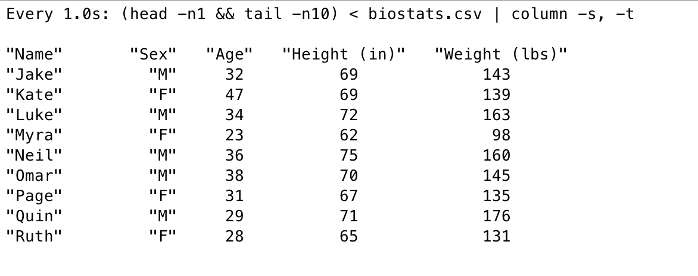

Pipe tail output into column
column command-line utility formats its input into multiple columns and aligns it nicely. It is useful for formatting output of csv files, or other commands.
$ cat users.csv id,user,active 1,John Doe,true 2,Will Smith,false $ column -s, -t < users.csv id user active 1 John Doe true 2 Will Smith false
tail command-line utility prints the last 10 lines of a file. It can be used with -f option to follow the file as it grows.
$ tail -f users.csv id,user,active 1,John Doe,true 2,Will Smith,false
To format the output of tail -f command, we can't use column command directly. column command can't produce output until it receives all the input. It needs all the input beforehand to calculate the column widths.
$ tail -f users.csv | column -s, -t
So, the above command won't work.
As the goal is to follow the output of the file, we can use watch command for this. watch command executes a command periodically, and displays its output.
$ watch -n 1 "tail -n 20 users.csv | column -s, -t"
This command will fetch the last 20 lines of the file, pipe it to column command, and display the output. It will repeat the command every 1 second.
As the file grows beyond 20 lines, the headers will be truncated. To preserve the headers, we can use head command in addition to tail command.
$ watch -n 1 "(head -n1 && tail -n20) < users.csv| column -s, -t"
This command will print the first line of the file, and then the last 20 lines of the file. The output will be piped to column command, and displayed.
Here is a screenshot of the output of a demo csv.

This makes it easy to watch the output of a file as it grows.